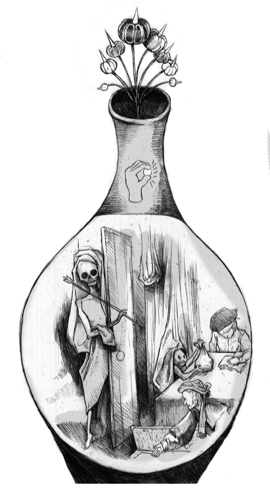

Fictitious Capital and the State (Part I)
Credit as the Philosopher’s Stone
This three-part essay comprises a historical “clearing exercise,” examining the various notions of credit and fictitious capital that have surfaced in economic discourse at successive points of capitalist (and pre-capitalist) economic development, concluding with Marx’s writings on capitalist finance in the latter half of the nineteenth century. Part I below locates the alchemical origins of credit and finance to Early Stuart England.
The credit system has a dual character immanent in it: on the one hand it develops the motive of capitalist production, enrichment by the exploitation of others’ labour, into the purest and most colossal system of gambling and swindling, and restricts ever more the already small number of the exploiters of social wealth; on the other however it constitutes the form of transition towards a new mode of production. It is this dual character that gives the principal spokesmen for credit, from [John] Law through to Isaac Péreire, their nicely mixed character of swindler and prophet.

IN HIS MAGISTERIAL HISTORY OF ECONOMIC ANALYSIS (1954), JOSEPH SCHUMPETER DISTINGUISHED “REAL ANALYSIS” FROM “MONETARY ANALYSIS.” According to real analysis, all of the essential phenomena of economic life — output, employment, distribution, and growth — can be described in terms of goods and services, without reference to monetary variables. Money, in this view, becomes a mere technical device to facilitate exchange in a barter-economy; money-prices are a neutral veil over the real exchange ratios between commodities.According to Schumpter, “Real Analysis proceeds from the principle that all essential phenomena of economic life are capable of being described in terms of goods and services, of decisions about them, and of relations between them. Money enters the picture only in the modest role of a technical device that has been adopted in order to facilitate transactions. This device can no doubt get out of order, and if it does it will indeed produce phenomena that are specifically attributable to its modus operandi. But so long as it functions normally, it does not affect the economic process, which behaves in the same way as it would in a barter economy: this is essentially what the concept of Neutral Money implies.” See Schumpeter, History of Economic Analysis (1954): 277. These assumptions typify the starting point of the quantity theory of money, from David Hume to Milton Friedman. Changes in the money supply alters the general price level.
Monetary analysis, by contrast, “introduces the element of money on the very ground floor of our analytical structure and abandons the idea that all essential features of economic life can be represented by a barter-economy model.”Ibid., 278.
Readers familiar with Schumpeter’s earlier Theory of Economic Development (1911) know his firm residence in the latter camp — as opposed to the money-neutral, neo-classical world of “circular flow,” the critical operations of bank credit advanced capital to finance the Schumpeterian entrepreneur’s setting into motion of the cluster of “new combinations,” inaugurating the upswing of a business cycle. In other words, credit was capitalism in motion.
Marx’s own theory was, on the other hand, a model of real analysis. Not inaccurately, Schumpeter adduced both Marx’s derivation of money as the “general equivalent” from Capital, Volume I and his crisis theory driven by the rising organic composition of capital (purely a technological phenomenon for Schumpeter) as real analysis of the cyclical and long-run trends of capital accumulation. Money, credit, and the interest rate all took a back seat to labor-saving technical change, falling profit rates, and crises of over-production.
Yet, in the above quote from the third volume of Capital, Marx assigned to the credit system (i.e., capitalist finance) a catalyzing role in “the form of transition towards a new mode of production.” Well-acquainted with the financial history of Western Europe, he mentioned both John Law, the eighteenth-century financier-cum-Bourbon monetary magistrate, and the Péreire brothers, renowned Saint-Simonian investment bankers who, among other things, funded the Haussmannization of Paris.Some accounts of Saint-Simonian “universal banking” are given in Tom Kemp, Economic Forces in French History: Essay on the Development of the French Economy, 1760-1914 (1971) and more recently in David Harvey, Paris, Capital of Modernity (2003).
Subsisting in London off an income from a journalistic gig at the New York Daily Tribune, Marx closely documented the great seizing up of the European money markets in 1856-7 — a contagion of bank runs (Marx reserves most of his critical powers for the Péreire-piloted Crédit Mobilier in Paris), collapsing investor confidence, and hoarding of specie that amounted to nothing less than a world recession. With a few important exceptions,Rosa Luxemburg, Rudolf Hilferding and (more recently) Duncan Foley are notable exceptions. See forthcoming parts for a treatment of the French monetary economist Suzanne de Brunhoff and the Italian theorist of operaismo Sergio Bologna.
subsequent expositors of Marxian economics from Ernest Mandel to Paul Sweezy made little of Marx’s admittedly obscure squibs on credit and money, usually scattered in between verbal jousts with the then-vogue American protectionist Henry Carey in the pages of the Daily Tribune.
While looking forward to Paris, the 1857 crisis, and Marx’s Daily Tribune writings in the forthcoming parts of this essay, Part I examines writerly treatments of monetary issues in the pre-industrial England. Enter a circle around Samuel Hartlib (1600-1662) in Stuart London, savants and scientific reformers who detached value from a neo-Aristotelian conception of making-making as sterile chrematistics.
Emerging discourse around credit and money at this time was inseparable from the process of English state-formation, in particular the development of a funded national debt, a central bank qua lender of last resort, increasingly complex financial intermediation, and the expansion of colonial trade — key shifts that comprised moments in Marx’s “form of transition,” which ceded the stage to his proverbial swindlers and prophets. For Marx, pre-industrial commercial capital — consisting of “usurer’s capital” and its twin, “merchant capital” — were “antediluvian forms of capital” that were necessarily subordinated capitalist production.By “antediluvian,” Marx meant that merchant and usurer’s capital pre-date capitalist social relations. To be sure, there was exploitation of labor by the usurer (through various mechanisms of debt), only without capitalist production, i.e., the generation of absolute or relative surplus value. For a re-interpretation of Marx’s categories, see Jairus Banaji, “Merchant Capitalism, Peasant Households and Industrial Accumulation: Integration of a Model” (2016).
In logical terms, the imposition of the law of value in the sphere of production subordinated zero-sum, unequal exchange in the sphere of circulation (the trade in commodities on the world-market or the re-shuffling of money-assets on the stock exchange) to the former’s imperatives. It was capitalism’s historical task to fix these first, “free” forms of capital — circulating company stocks, bonds, negotiable bills of exchange, interest-bearing commercial paper — in plant, equipment, and factories.
A secondary goal of this essay, however, is to cast doubt both on the “antediluvian” nature of Marx’s categories of commercial capital and their “final” subordination to industrial capital.
Medieval scholastic and Thomistic notions of just price and usury had their philosophical beginnings in Aristotle. “For money,” as he put it in The Politics, “was intended to be used in exchange, but not to increase at interest.” In the distributively-just polis, chrematistics (“the birth of money from money” sans a higher good) was “the most unnatural” form of wealth accumulation.Aristotle construed chrematistics as one of two “two sorts of wealth-getting,” the other being oikonomia or the art of managing a virtuously-ordered household. Unlike household management (“necessary and honorable”), chrematistics is the sheer “breeding of money.” See Stephen Everson, ed., Aristotle: The Politics and the Constitution of Athens (New York: Cambridge University Press, 1996), 23.
Looking towards Marx’s value theory, the practitioner of chrematistics cared not for an object’s natural use; he was concerned solely with its value in exchange.
In early Stuart England, this Aristotelian universe of fixed, absolute reciprocities between unchanging substances inflected the providential language of “harmony” and “balance” replete in early mercantilist writings on trade, commerce, and the wealth of nations.For metaphorical uses of classical concepts in mercantilist political economy, see Andrea Finkelstein, Harmony and the Balance (2000) and Joyce Appleby, Economic Thought and Ideology in Seventeenth Century England (1978).
In an environment where specie — gold and silver — was the sole means of settling international payments, domestic economies were often plagued by a chronic scarcity of coin. Fully integrated into world-market by the seventeenth century, England’s significant lead in its export-oriented textile industry (especially in woolens and in the lighter, worsted “New Draperies”) pulled gold and silver from Spain and the rest of western Europe. Nevertheless, partly due to insatiable domestic demand for Eastern luxuries like spices and calicoes, net specie outflow (sustained trade deficits with the rest of the world) caused periodic commercial panics.
Recent historians have attested to the large role credit played in smoothing out day-to-day economic transactions amidst dry spells of metal currency.Craig Muldrew, The Economy of Obligation (1997).
Merchants in both retail and wholesale/overseas trades used informal credit instruments (promissory notes, sales credit recorded in ledgers ,or even verbal agreements) to facilitate the exchange of goods and service. In the agricultural sector, producers relied on the discount of “inland” bills of exchange by goldsmith bankers, which provided crucial, seasonal liquidity to hire labor and working capital during summer harvests.
Despite the proliferation of private credit in an unstable monetary system, mercantilist commercial theorists like the merchant and trade commissioner Gerard de Malynes (1585-1641) harbored classical Aristotelian anxieties around the generalized use of negotiable debt. In his Center of the Circle of Commerce (1623), Malynes adopted a Schumpeterian real analysis avant la lettre, clarifying that money “infused life to Traffique by meanes of Equality and Equity, preventing advantage between Buyers and Sellers.” Monetary arbitrage offended the natural order of things, wherein the estates and commercial classes of England lived “by the natruall richesse of the land…all of them making a perfect consent and harmony of the government of a common-wealth.” For Malynes, commercial reciprocities providentially mirrored the internal relations (conceived as “humours” in a bodily metaphor) of the commonwealth’s social hierarchy. Money, acting as a unit and a measurement of value, served only to make real goods (“the natruall richesse of the land”) commensurable. Against this notion, the artificial, unlimited accumulation of chrematistic wealth by the emerging mercantile elite, in “making of money a merchandize,” threatened to put natural “equality” and “equity” (the hereditary status of the peerage, gentlemen, and landed proprietors) into flux.
Money, in Malynes’ Aristotelian view, equated to the “internall” or “intrinsique value” of the precious metals out of which it was coined. Money famines and subsequent commercial deflation (goods being produced over and above the scarce supply of coin) acted as checks on the chrematistic ventures of urban burghers. Credit and paper money amounted to “artificiall wealth” that distorted the socio-economic balance of the commonwealth.The quotations from Malynes’ pamphlet are taken from Joyce Appleby, Economic Thought and Carl Wennerlind, Casualties of Credit (2011). My account of the importance of the Hartlib Circle owes much to Wennerlind’s analysis as well as Mary Poovey’s Genres of the Credit Economy (2008).
Neo-Aristotelian economic doctrine’s “real analysis” shared with mercantilist economic thought a zero-sum notion of international trade based a fixed world-supply of precious metals (“bullionism”).For an overview of mercantilist doctrine, see Albert O. Hirschman, National Power and the Structure of Foreign Trade (1945).
The Tantalus of self-expanding (i.e. positive-sum) wealth awaited unlocking by the potent cross-fertilization of political economy, alchemy, and natural science that took place first during the Civil War but lasting through the Interregnum and Restoration among associates of the German-born polymath Samuel Hartlib.
The classical virtues recommended by Xenophon, Plato, Aristotle, the Stoics, and their Christian successors presupposed that human desires, when directed to their proper ends, were coherent and limited; the cosmos is ordered to an intelligible purpose (telos), and the provisions of nature were more than adequate to fully service an excellent polis. The natural philosopher Francis Bacon (1561-1626) put these classical concepts of nature and human desire to radical revision; his “new science” proposed the incoherence of human desire, its potentially unlimited scope, the lack of any discernable telos in the cosmos, and the fundamental inadequacy of natural provision. The Baconian program constituted a revolt against the abstemiousness of nature — with knowledge and expertise, its gifts can be forced to yield more. In Bacon’s utopian scientific community of New Atlantis:
[The] natural philosophy proposes to itself, as its noblest work of all, nothing less than the restitution and renovation (instauration) of things corruptible, and (what is indeed the same thing in a lower degree) the conservation of bodies in the state in which they are, and the retardation of dissolution and putrefaction.Francis Bacon, The Wisedome of the Ancients (1609).
Followers of Hartlib would infuse the utilitarianism of Baconian, instrumental science — the Novum Organum — with alchemical ideas of transmutation.
While practitioners of alchemy explored esotericism for spiritual, medicinal and industrial gain, England’s chronic monetary ills and the social upheavals it threatened (as sketched above) privileged the discovery of the philosopher’s stone as a money-making project. The infinite expansion of England’s money stock would put a variety of social and economic issues to rest once and for all. Alchemy, in this spirit of social reform, reached the highest echelons of state power. Elizabeth I supported John Dee; Dee’s successor Sir Kenelm Digby gained the patronage of James I and Charles I; Charles II, after the Civil War, built a clandestine alchemical lab underneath his private chambers.
Samuel Hartlib left Prussia to settle in England in 1628. Thereafter, he began collaborating with social, educational, and religious Protestant reformers like John Dury and Jan Amos Comenius. Hartlib organized a network of savants, luminaries, and natural philosophers in what became known as the “Invisible College.” Its members — including future Royal Society legends like Robert Boyle, Sir William Petty, and Henry Oldenburg — applied the Baconian method to commercial ends, actively promoting innovations in agriculture, mining, and manufacturing. The Hartlibians’ progressive, unmistakably bourgeois spirit led their promotion of popular educational campaigns to improve the lot of the poor and “the middling sorts.”
Any industrious and honest merchant or trader could create money, which in contrast to its neutral role in a static and finite neo-Aristotelian economy, displayed the productive ability to activate both nature’s and society’s hidden or underutilized resources. The Hartlibian William Potter published a pamphlet titled The Key of Wealth, or, A New Way for Improving of Trade (1650), which asserted that “the only feasible means, whereby both to revive and multiply the decayed Trade of this Land, is by increasing amongst Tradesmen some firm and known Credit.”William Potter, The Key of Wealth: Or, A New Way for Improving of Trade (1650), 34.
Moreover, credit’s “capacity of inriching this Nation, is in a sort infinite.” Potter’s Key of Wealth proposed the creation of a new paper currency for use among an exclusive club of merchants that would facilitate interest-free borrowing on good securities. Here, credit was the alchemical “key” that transmuted matter into wealth.
Unlike modern commercial banks which create credit by taking deposits and extending loans, country and goldsmith banks in Stuart England functioned as effective vaults for precious metals that required safekeeping. With the exception of London’s merchant banks, most banks “are nothing else in effect but places where men pawn or deposite their moneys for obtaining currant credit, as that which they may keep with lesse danger, and assign to another with lesse trouble.” In other words, their capacity for credit expansion was limited.
This “financial repression” incurred the Hartlibians’ support for the spread of land banks that issued paper notes with “as [much] true intrinsick value, as Gold and Silver” in exchange for securitized mortgages to expand the nation’s monetary base and facilitate commercial exchange. Some members of the Circle even advocated a public bank on the Amsterdam model. Finally, like in the case of Potter’s paper bills, the interest rate was perceived as a key economic variable that determined the transferability of credit instruments, and thus the velocity of transactions. Through quickening the mobility of capital, low interest rates buttressed the Hartlibian vision of commercial improvement in agriculture and industry. The Circle’s support of low rates, then, added an economic logic to the traditionally religio-moral Scholastic argument against usury. Through the control of monetary mechanisms (banks and credit), the alchemical dream of constantly expanding wealth was within reason; the unlimited allocation of credit — partnered with knowledge and industry — became the philosopher’s stone.
In the “Pre-capitalist Relationships” chapter of Capital, Volume III, Marx historicized the battle against usury (“in the manner of the ancient writers, the church fathers, Luther or the early socialists”) to the medieval economy. Credit or “interest-bearing capital,” on the other hand, “develops as a reaction against usury.” In this way, the Hartlib Circle’s quasi-mystical system of credit represented an advance over the Medieval Schoolmen’s re-packaging of Aristotle’s monetary teachings: “not an anathema against interest-bearing capital in general, but on the contrary, its explicit recognition.” Lest we confuse surface phenomena with essence, Marx quickly added that:
What distinguishes interest-bearing capital…from usurer’s capital is by no means the nature and character of this capital itself. It is merely the altered conditions under which it operates, and consequently also the totally transformed character of the borrower, who confronts the money-lender.
Writing in the nineteenth century, Marx looked forward to the full subordination of interest-bearing capital to industrial capital; only then would usurer’s capital shed its fragmentary, floating nature and dutifully flow to where it may obtain the highest return (implying the equalization of profit rates across sectors, and so on).
So far, we have traced the economization (and secularization) of medieval notions of usury and credit. To get from the Hartlibians’ utopian alchemy to the sophisticated capital markets of Marx’s industrial age, however, we must next address the state — namely, the eighteenth-century financialization of European markets at the hands of Europe’s war-making, absolutist states and their borrowing habits. Part II will cover Augustan England’s financial “revolution from above.”
FRA is a slave of some defunct economist.